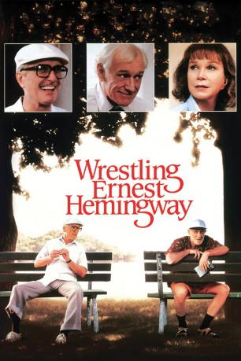

#10279 Walter & Frank - Ein schräges Paar
Alternativ: Wrestling Ernest Hemingway (Englischer Titel)
 
 IMDB-Wertung: 7.1 / 10
IMDB-Wertung: 7.1 / 10  Metascore: 0
Metascore: 0 
In einem Küstenstädtchen in Florida verleben der draufgängerische Ex-Kapitän Frank und der distinguierte Ex-Friseur Walter ihren Ruhestand. Obwohl die Männer unterschiedlicher kaum sein könnten, keimt bereits nach ihrem ersten Zusammentreffen eine tiefe Freundschaft, die beiden Männern auf ihre alten Tage völlig neue Lebensperspektiven eröffnet. Der zurückhaltende Walter verliert eine Menge Hemmungen (bes. gegenüber dem weiblichen Geschlecht), und der rauhbeinige Frank lernt erstmals die Vorteile guten Benehmens kennen.
Jahr: 1993
Dauer: 114 Minuten
FSK: 12
Land: USA Studio: Warner Bros.Tonspuren: DD5.1 - ,
Untertitel:
Auflösung: 720p (1280x720) Größe: 2805 MB
Genre: Drama, Liebe
Regisseur: Randa Haines
Drehbuch: Steve Conrad
Soundtrack: Michael Convertino
Darsteller:
 Robert Duvall als Walter
Robert Duvall als Walter Richard Harris als Frank
Richard Harris als Frank Shirley MacLaine als Helen Cooney
Shirley MacLaine als Helen Cooney Sandra Bullock als Elaine
Sandra Bullock als Elaine Micole Mercurio als Bernice
Micole Mercurio als Bernice Marty Belafsky als Ned Ryan
Marty Belafsky als Ned Ryan Piper Laurie als Georgia
Piper Laurie als Georgia Ed Amatrudo als Henry's Dad
Ed Amatrudo als Henry's Dad- Doris Carey als Mom in Park
 Adam Arkin als Bookstore Manager (uncredited)
Adam Arkin als Bookstore Manager (uncredited)- Harold Bergman als Sleeper
- Jag Davies als Henry
- Rudolph X. Herrera als Umpire
- Persephone Felder als Woman in Stands
- Stephen G. Anthony als Leo Peetes
- Greg Paul Meyers als Sid Showenstein
- Aquilla Owens als First Girl in Park
- Jody Wilson als Nurse
- Anthony Rene Jones als Herb the Bus Driver
- Richard Jasen als Third Baseman
- William Marquez als Carl Burney
- Ilse Earl als Cinema Cashier
- Kent Ehrhardt als Weatherman
- Danika Daly als Second Girl in Park
- Eleonora L. Vescera als Singing Woman
- Daryl Matthews als Officer Mickey
Datei: X:\1993\Walter & Frank - Ein schräges Paar (1993, FSK12, 1280x720).mkv seit 27.12.2018
Festplatte: HD 1992-1995
 Es gibt insgesamt 68 Filme in der Gruppe '1993'
Es gibt insgesamt 68 Filme in der Gruppe '1993'